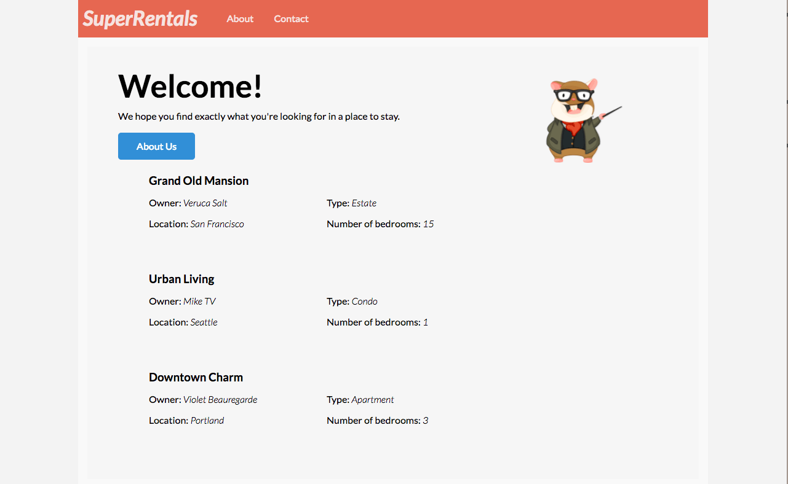

Instalando Addons Melhorar esta página
Ember possui um rico ecossistema de addons (plugins) que pode ser facilmente instalados em seus projetos. Os addons fornecem uma ampla gama de funcionalidades para projetos, muitas vezes economizando tempo e permitindo que você se concentre em seu projeto.
Para procurar addons, visite o site Ember Observer. Ele cataloga e categoriza os addons do Ember que foram publicados no NPM e atribui-lhes uma pontuação baseada em uma variedade de critérios.
Para nosso aplicativo Super Rentals, aproveitaremos dois addons: ember-cli-tutorial-style e ember-cli-mirage.
ember-cli-tutorial-style
Em vez de ter você copiar/colar o CSS para o estilo Super Rentals, criamos um addon chamado ember-cli-tutorial-style que adiciona instantaneamente CSS ao tutorial.
O addon funciona gerando um arquivo chamado ember-tutorial.css e colocando esse arquivo no diretório super-rentals vendor.
O diretório vendor no Ember é um diretório especial onde você pode incluir o conteúdo que é compilado em seu aplicativo.
Quando o Ember CLI cria nosso aplicativo a partir do nosso código-fonte, ele copia ember-tutorial.css em um arquivo chamado vendor.css.
À medida que o Ember CLI é executado, ele leva o arquivo CSS ember-tutorial e coloca-o em um arquivo chamado vendor.css.
O arquivo vendor.css é referenciado em app/index.html, tornando os estilos disponíveis em tempo de execução.
Podemos fazer ajustes de estilo adicionais para vendor/ember-tutorial.css, e as mudanças terão efeito sempre que reiniciarmos o aplicativo.
Execute o seguinte comando para instalar o complemento:
1 |
ember install ember-cli-tutorial-style |
Uma vez que os addons do Ember são pacotes npm, ember install instala-os no diretório node_modules e faz uma entrada em package.json. Certifique-se de reiniciar seu servidor após o complemento ter sido instalado com sucesso. Ao reiniciar o servidor será incorporado o novo CSS e ao atualizar a janela do navegador lhe dará isso:

ember-cli-mirage
Mirage é uma biblioteca de client HTTP que normalmente é usada para teste de aceitação do Ember. Para o caso deste tutorial, usaremos o mirage como nossa fonte de dados em vez de um servidor backend tradicional. Mirage nos permitirá criar dados falsos para trabalhar com o desenvolvimento de nosso aplicativo e imitar uma API. Os dados e os endpoints que configuramos aqui entrarão em jogo mais tarde no tutorial, quando usarmos o Ember Data para fazer solicitações do servidor.
Instale o complemento mirage da seguinte maneira:
1 |
ember install ember-cli-mirage |
Nosso foco principal com o Mirage será no arquivo config.js, que é onde podemos definir os endpoints da nossa API.
Seguiremos a JSON-API specification que exige que nossos dados sejam formatados de uma certa maneira.
Vamos configurar o Mirage para enviar nossos aluguéis que nós definimos acima atualizando mirage/config.js:
| mirage/config.js | |
1 2 3 4 5 6 7 8 9 10 11 12 13 14 15 16 17 18 19 20 21 22 23 24 25 26 27 28 29 30 31 32 33 34 35 36 37 38 39 40 41 42 43 44 45 46 47 48 49 50 51 52 53 54 55 56 57 58 59 60 61 62 63 64 65 66 67 |
export default function() { this.namespace = '/api'; this.get('/rentals', function() { return { data: [{ type: 'rentals', id: 'grand-old-mansion', attributes: { title: 'Grand Old Mansion', owner: 'Veruca Salt', city: 'San Francisco', "property-type": 'Estate', bedrooms: 15, image: 'https://upload.wikimedia.org/wikipedia/commons/c/cb/Crane_estate_(5).jpg' } }, { type: 'rentals', id: 'urban-living', attributes: { title: 'Urban Living', owner: 'Mike Teavee', city: 'Seattle', "property-type": 'Condo', bedrooms: 1, image: 'https://upload.wikimedia.org/wikipedia/commons/0/0e/Alfonso_13_Highrise_Tegucigalpa.jpg' } }, { type: 'rentals', id: 'downtown-charm', attributes: { title: 'Downtown Charm', owner: 'Violet Beauregarde', city: 'Portland', "property-type": 'Apartment', bedrooms: 3, image: 'https://upload.wikimedia.org/wikipedia/commons/f/f7/Wheeldon_Apartment_Building_-_Portland_Oregon.jpg' } }] }; }); } export default function() { // These comments are here to help you get started. Feel free to delete them. /* Config (with defaults). Note: these only affect routes defined *after* them! */ // this.urlPrefix = ''; // make this `http://localhost:8080`, for example, if your API is on a different server // this.namespace = ''; // make this `/api`, for example, if your API is namespaced // this.timing = 400; // delay for each request, automatically set to 0 during testing /* Shorthand cheatsheet: this.get('/posts'); this.post('/posts'); this.get('/posts/:id'); this.put('/posts/:id'); // or this.patch this.del('/posts/:id'); http://www.ember-cli-mirage.com/docs/v0.3.x/shorthands/ */ } |
Mirage funciona sobreescrevendo o código JavaScript que faz solicitações de rede e, em vez disso, retorna o JSON que você define.
Devemos notar que isso significa que você não verá nenhum pedido de rede em suas ferramentas de desenvolvimento, mas verá o JSON registrado em seu console.
A nossa atualização para mirage/config.js configura o Mirage para que sempre que o Ember Data fizer um pedido GET para /api/rentals, o Mirage retornará este objeto JavaScript como JSON e nenhuma solicitação de rede será realmente feita.
Também especificamos um namespace de /api em nossa configuração do Mirage.
Sem essa mudança, a navegação na URL /rentals em nosso aplicativo entraria em conflito com o Mirage.
Para que isso funcione, precisamos que nosso aplicativo faça as requisições para o namespace /api.
Para fazer isso, precisamos criar um adapter no nosso aplicativo.
Um Adapter é um objeto do Ember Data usado para determinar como nos comunicamos com nosso backend.
Vamos abordar o Ember Data mais detalhadamente mais adiante neste tutorial.
Por enquanto, vamos criar um adapter para nosso aplicativo:
1 |
ember generate adapter application |
Este adapter extende a classe base JSONAPIAdapter do Ember Data:
| app/adapters/application.js | |
1
2
3
4
5
6 |
import DS from 'ember-data'; export default DS.JSONAPIAdapter.extend({ namespace: 'api' }); |
Se você estiver executando ember serve em outro terminal, reinicie o servidor para incluir mirage em sua compilação.
Note que neste ponto do tutorial, os dados ainda são fornecidos pelo arquivo app/routes/rentals.js. Usaremos os dados do Mirage que configuramos aqui na próxima seção chamada Using Ember Data.